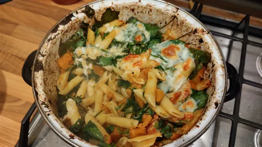

Spicy butternut squash pasta with spinach
Here’s a vegetable-filled pasta bake that comes together in under an hour. The most time-consuming part of this recipe is prepping the squash.
Servings: 4
Total: 40 mins
 Vegetarian
Vegetarian
Ingredients
- Kosher salt
- 3 tbsp olive oil, plus more for serving
- 1 medium butternut squash, peeled, seeds removed and cut into ½-inch cubes
- 1 tbsp ground cumin
- ½ tsp red-pepper flakes, plus more as needed
- 1 lb penne, or other tubular pasta
- 1 cup low-sodium vegetable broth, or water
- ¾ cup grated Parmesan
- 3 packed cups baby spinach
- 1 ball fresh mozzarella, torn into bite-sized chunks
- 1 jalapeño, sliced into rounds
- ⅓ cup flat leaf parsley
Instructions
- Bring a large covered pot of heavily salted water to a boil.
- Meanwhile, in a 12-inch ovenproof skillet with high sides and a tight-fitting lid (or a Dutch oven), heat the oil3 tbspover medium-high until shimmering. Add thesquash1 mediumand season with salt, cumin andred-pepper flakes½ tsp. Cook, stirring every minute, untilsquash1 mediumbecomes browned in spots and feels just tender, 6 to 8 minutes.
- Meanwhile, heat the oven to 200°C. Add the pasta1 lbto the boiling water and cook, uncovered, until not quite al dente, 3 to 4 minutes less than the package instructions. (It should be a little too firm to the bite.) Reserve 1 cup of thepasta1 lbwater and drain. If thepasta1 lbis done before thesquash1 medium, then stir in a drizzle of oliveoil3 tbspso that it doesn’t stick together.
- When the squash1 mediumis just tender, add the broth. Bring to an active simmer, cover and cook, stirring occasionally, until thesquash1 mediumis soft and easily mashable, 10 to 12 minutes. Turn off the heat, then use a potato masher or the back of a wooden spoon to crush about half of the butternutsquash1 mediumand leave the rest chunky. Season thesquash1 mediumto taste, keeping in mind that saltyParmesan¾ cupwill be added soon.
- Add the cooked pasta1 lbto the skillet along with 1 cup reservedpasta1 lbwater and ½ cup gratedParmesan¾ cup, stirring vigorously to combine. Stir in thespinach3 packed cupsone handful at a time until it shrinks down a little.
- Sprinkle the top with the remaining ¼ cup Parmesan¾ cup, themozzarella1 ballandjalapeño1, then place in the oven, on a sheet pan if you are worried about dripping. Cook until the top is melted and browned in spots, 12 to 15 minutes. Drizzle with oliveoil3 tbsp, top withparsley⅓ cupand serve.
cooking.nytimes.com Short Link Long Link